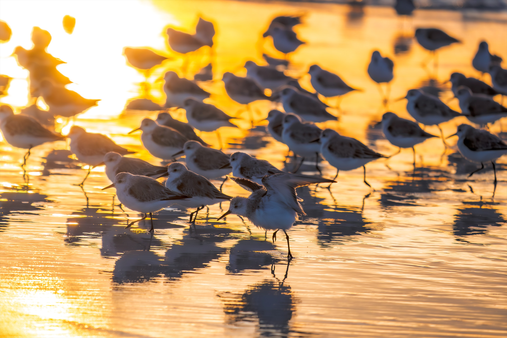
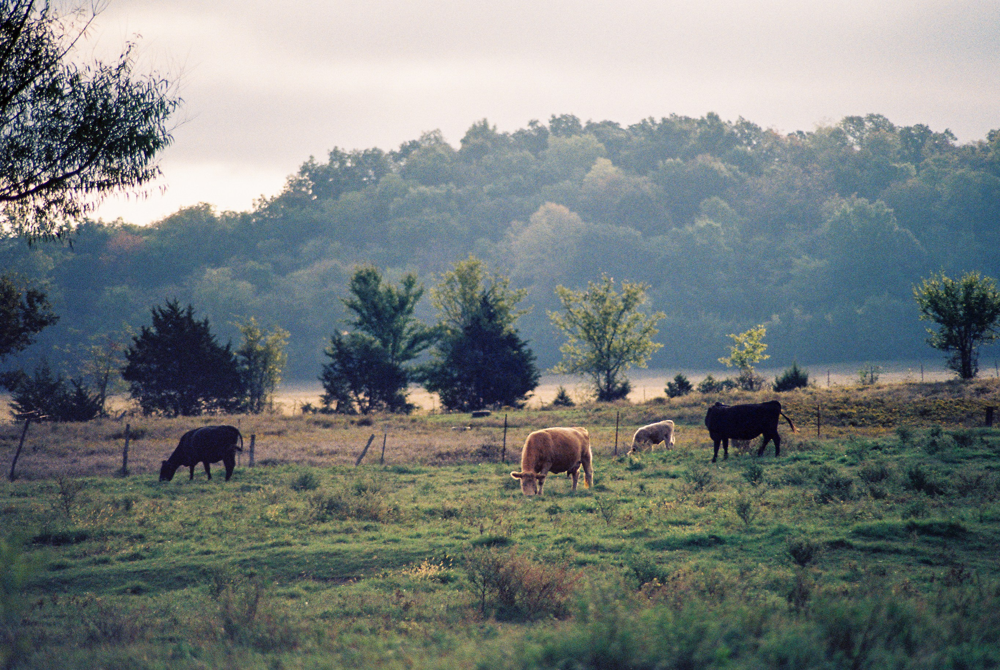

Barrett Papan
Wildlife and landscape photography
Portfolio
Selected work

For businesses
Photography for your space.
I offer a small, carefully selected collection of wildlife and Arkansas photographs as finished artwork for restaurants, offices, hotels, and other local spaces. I can help choose the image, size, and presentation that fits the room.
Based in Central and Northwest Arkansas, I am starting with simple one-piece placements and small collections.
Ask about artwork for your spaceAbout
Barrett Papan
I’m Barrett Papan, a photographer drawn to wildlife, especially birds, and the quiet places around them. I pay attention to small movements, changing light, and moments that are easy to miss. This portfolio brings together the photographs I find myself returning to because they feel personal, familiar, and close to home.
Based in Central and Northwest Arkansas